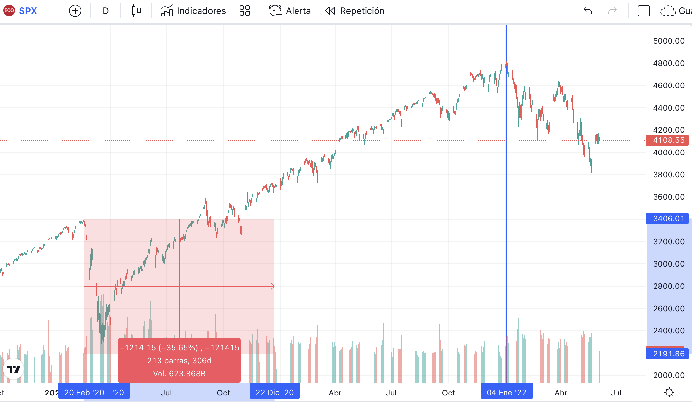

Coyuntura Económica Global Post Pandemia. La pandemia, ¿un acelerador en los ciclos de la economía? Inflación y políticas monetarias.
Prólogo
La pandemia del Covid-19 fue sin dudas, a mi parecer, la peor crisis de los últimos 20 años, teniendo en cuenta la crisis financiera a finales del 2007 y principios del 2008 o las punto com (.com) en el año 2001. De manera trágica e inesperada, sucumbió a los mercados globales y a las economías más desarrolladas, perdiéndose miles de millones de puestos trabajos, generando desempleo, cierres de fábricas y empresas, pero no solo impacto negativamente en materia económica sino que también lo fue en el ámbito sanitario, creando caos y colapsando clínicas, sanatorios y hospitales. Si bien la pérdida de capital es algo que nos causa disgusto, mucho más lo es la del capital humano, la ausencia de ese familiar al cual amamos y que su perdida no puede ser recuperada.
Mis más sinceras condolencias a todos aquellos que sufrieron la pérdida de un ser querido.
La pandemia como catalizador de la economía.
Como mencione anteriormente en el prólogo, el covid fue un agente externo tan devastador que ocasionó daños a gran escala.
Tal fue la magnitud, que el estado tuvo que aplicar estímulos fiscales y políticas monetarias para afrontar el debacle que
origino la pandemia. Para aquellos afortunados que conservaron sus trabajos y/o que ejercían sus funciones a distancia, de
manera remota; estas medidas permitieron generar un excedente de dinero, es decir, un superávit en aquellos hogares donde
sus integrantes no fueron desafectados de sus funciones laborales. La explicación de este fenómeno surge de la inyección
de liquidez, el aplazamiento de cobros de impuestos como así también de tarifas de proveedores de servicios y la condonación
(perdón o remisión) de deudas, ya sea total o de manera parcial. Estas medidas aplicadas por el estado y el ahorro por
parte de las personas de: viáticos, comidas, salidas con fines recreativos y de ocio, que realizaban en tiempos pre pandémicos,
permitió el anteriormente mencionado superávit.
Habiendo más dinero en circulación y capacidad de ahorro, hubo un aumento del consumo, consecuentemente un aumento en las ventas
de servicios y productos varios.
Si lo trasladamos al mercado, las empresas oferentes de los mismos veían reflejado en sus balances el ingreso de dinero por los
productos vendidos. La mirada de inversores y especuladores estuvieron atentas al comportamiento de los consumidores y a los balances
de las compañías cotizantes, volviendo atractiva la idea de adquirir acciones de las mismas. Los mercados comenzaron a inflarse como
un globo, superando día tras día nuevos máximos históricos hasta principios del mes de enero del 2022. Tomando de ejemplo el caso del
S&P 500, uno de los índices bursátiles más importantes de Estados Unidos, alcanzo un precio de 4818,62 USD, dejando sin efecto la caída
del 35,65%, aproximadamente, en el mes de marzo del 2020 producida por la pandemia.

Fuente: TradingView
El gráfico muestra una contracción a partir del 20 de febrero del 2020 hasta su piso a finales de marzo y su pronta recuperación.
Por desgracia, muchas veces lo bueno no suele ser eterno y esta no es la excepción. Las medidas que se tomaron a principios del Covid-19 ahora son opuestas.
Como consecuencia de un crecimiento monetario aparece, con cierto delay, un fenómeno denominado: Inflación.
Ahora las economías de todo el mundo, es decir a nivel global, buscan combatir la inflación, tratando de acaparar la mayor cantidad de dinero posible mediante
políticas contractivas: aumento de impuestos, disminución de subsidios, suba de tasas de interés y emisión de bonos o letras del tesoro. Estos últimos son instrumentos
por el cual los países atraen dinero de inversores y fondos de inversión a cambio de una rentabilidad futura.
Milton Friedman, un famoso economista estadounidense, galardonado con el premio Nobel de Economía a finales de la década del 70; hace una analogía sobre la inflación y el alcoholismo.
Él dice, que en ambos casos al principio se perciben los efectos buenos y posteriormente los malos. Inconscientemente se busca perdurar los primeros efectos, por lo que se perturba la
conducta de consumo de una forma exagerada. Es decir, al principio la impresión desmedida de dinero nos da la falsa sensación de un aumento en nuestra riqueza. Luego, de forma natural
y causal viene el impacto negativo cuando se interrumpe o se reduce la emisión monetaria.
Esto da lugar a una reducción en el poder de compra del dinero, viéndose ese efecto reflejado en los precios de bienes y servicios. Una mayor oferta de la moneda se vuelve poco tentadora
ante una igual cantidad de bienes escasos, al igual que pasaría con el intercambio de la misma con otras divisas, como por ejemplo: el Real. De esta forma se produce una depreciación de
nuestro dinero y una puja continua y creciente por la adquisición de los productos, como así también una devaluación en la cotización de nuestra moneda con respecto de otras.
Esta misma analogía que usa Friedman para explicar la situación económica que atravesó Japón en el año 1973 replica y sirve de la misma forma para entender el comportamiento de la economía
global a comienzos de la pandemia, en su desarrollo y su final. Aquí Friedman, con sus propias palabras, su explicación y conclusión:
Milton Friedman: ¿Cómo curar la inflacion?
Desde ya, espero que hayas disfrutado de la lectura. Compártelo con amigos.
Hasta la próxima edición.
El Inversor Argentino.